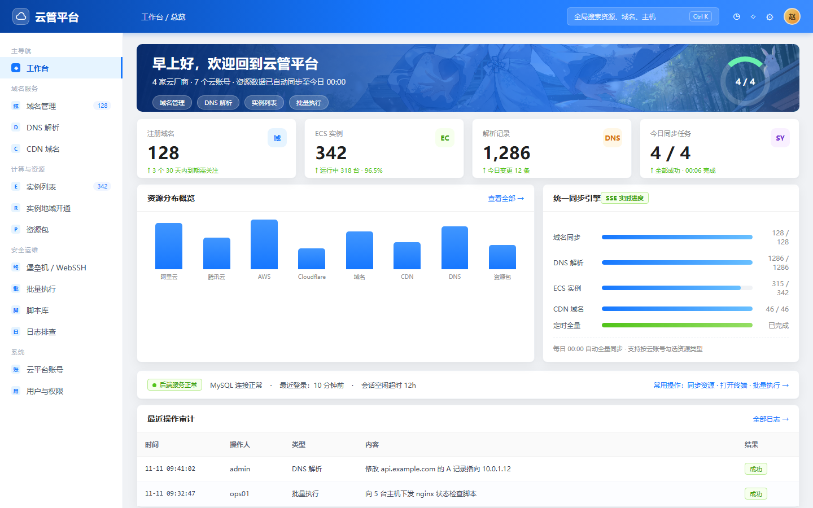
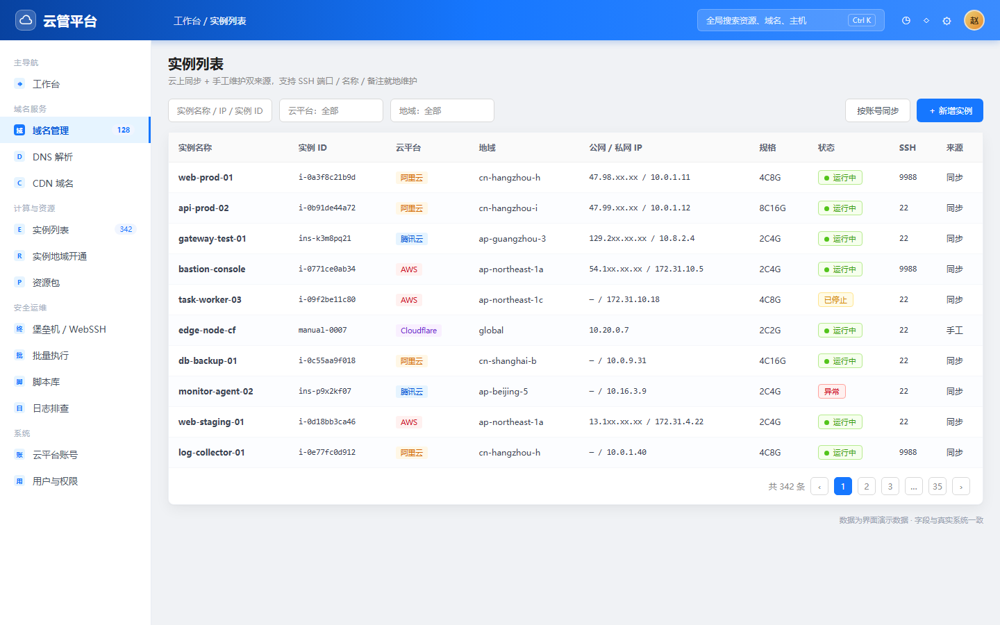
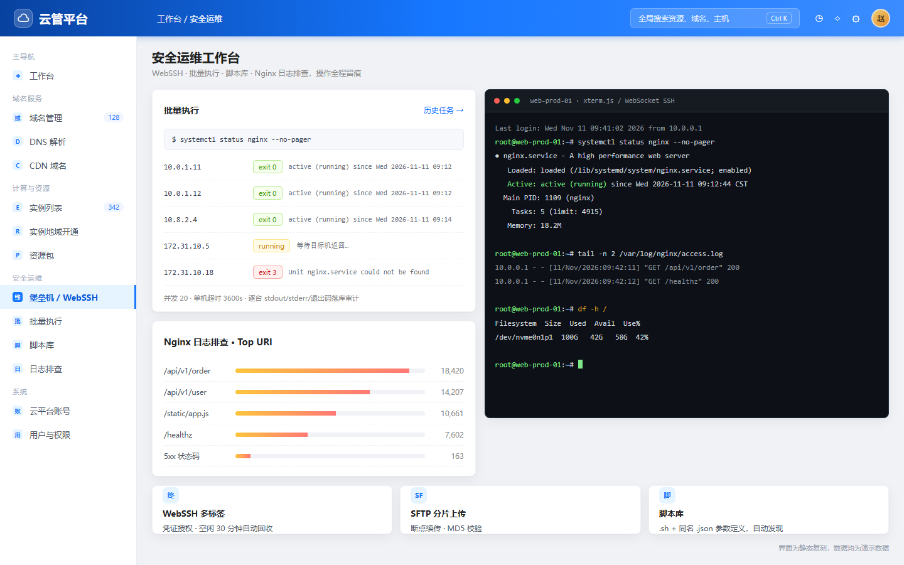

从「看得见」到「能操作、可追溯」
Provider 接口抽象四家云 SDK，域名 / DNS / ECS / CDN 一键全量同步，SSE 实时进度 + 每日定时。
到期 30 天/过期漏斗、解析记录 CRUD 与启停，针对阿里云重复限制做智能「先查后比、删+增」。
AccessKey AES 加密托管、Secret 脱敏回显，admin / user / readonly 三角色 + 验证码 + IP 限流。
xterm.js 多标签终端、SFTP 分片上传断点续传、凭证与用户组授权、空闲会话自动回收。
脚本并发下发、单机超时与取消，逐台 stdout / stderr / 退出码落库审计，可追溯可复盘。
Nginx 日志路径探查 + awk 聚合分析，go:embed 运维脚本按 md5 自动同步到目标机。
静态高保真复刻 · 演示数据 · 无需启动服务



后端单二进制直托前端，同源 /api，没有构建链路与跨域负担
SPA 主站 + 12 个独立页面，单页错误隔离；xterm.js Web 终端。
Vue 3core.jsAnt Design 风格Router + 鉴权中间件、统一同步引擎、Bastion、GORM 模型；SSE 与 WebSocket 实时通道。
GinGORMSSE / WSMySQLProvider 接口统一四家差异，Cloudflare 作为 DNS 特例跳过 ECS/CDN 同步。
阿里云 SDK腾讯云 SDKAWS SDK v2Cloudflare REST两个目录需同级，进程工作目录为 cloud-manager-backend/；前端由后端托管，不需要单独起前端服务。
cloud_managerconfig.yaml 不入库，从 example 复制./devops init 幂等建表并创建管理员:8080，浏览器直接访问